Candidate List 20260915Last night — ZTF: 2,648 passed basic cuts (161 young) · LSST: 0 passed basic cuts (0 young)Previous Day Next Day
Section 1: New Sources (age<1d) Section 2: Old (1-5d) sources observed last nightplaceholder
Section 1: New Afterglow/FBOT Cands Last Night (0)
Section 2: Older Sources Observed Last Night (11)
0. [ZTF] ZTF26absxhrh (FBOT?) [Back to Top] [Share] [Trigger Swift] [Fritz Alert] [Fritz Source] [Lasair]RA, Dec: 324.49356, 0.18828 21h37m58.45s, 0d11m17.80sGalactic (l, b): 55.18825, -36.14144 ext(g-r) = 0.066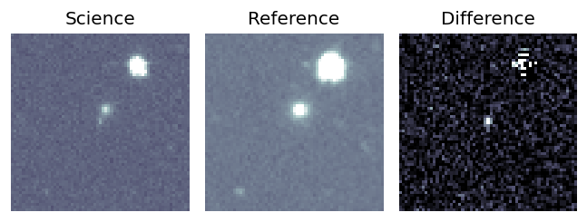
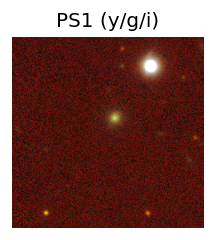
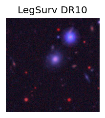
TESS: Sectors [55 82]
NED host (10 arcsec):Found WISEA J213758.32+001122.0 (G, 4.7″); NED spec-z: z=0.0618 [zflag SLS]; peak abs mag = -18.68
PS1: 1 source in 3 arcsec Closest: d = 4.66 arcsec photoz=0.10+/-0.02 peak abs mag = -19.87
LegacySurvey: 0 sources in 3 arcsec
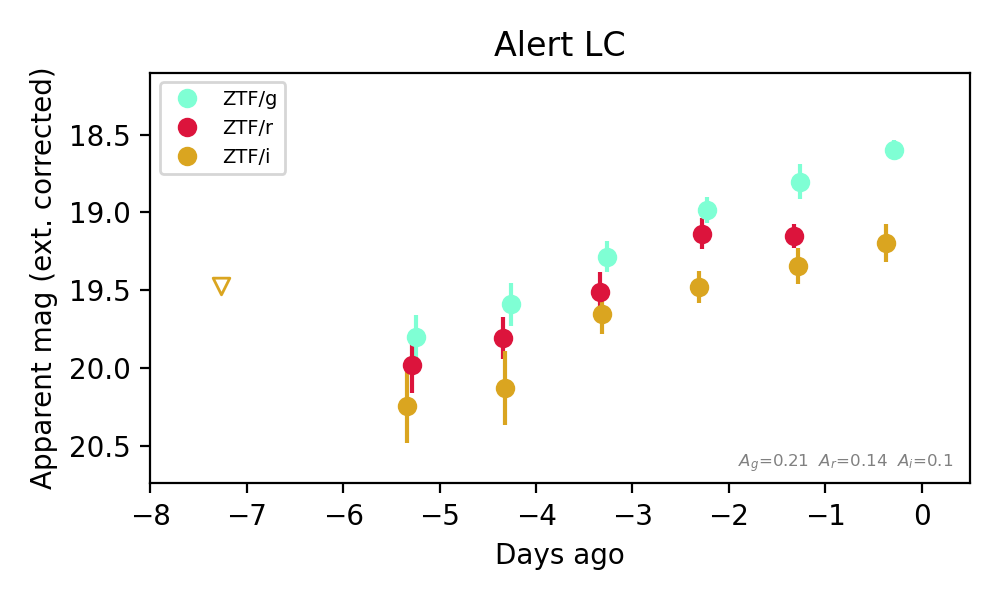
Extinction-corrected gr color:
From alerts: -0.35 +/- 0.14 mag
Extinction-corrected gi color:
From alerts: -0.59 +/- 0.14 mag
Extinction-corrected ri color:
From alerts: -0.19 +/- 0.14 mag
Rise Rate:
g: 0.24 mag/day
r: 0.22 mag/day
i: 0.2 mag/day
Fade Rate:
1. [ZTF] ZTF26absxtws (FBOT?) [Back to Top] [Share] [Trigger Swift] [Fritz Alert] [Fritz Source] [Lasair]RA, Dec: 334.44739, -27.7289 22h17m47.37s, -27d-43m-44.03sGalactic (l, b): 22.84422, -56.04122 ext(g-r) = 0.017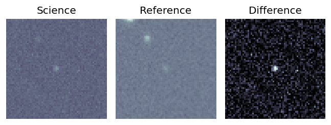
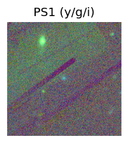
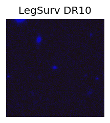
TESS: Sectors [ 1 28 68 95 106]
PS1: 1 source in 3 arcsec Closest: d = 0.35 arcsec photoz=0.44+/-0.36 peak abs mag = -23.60
LegacySurvey: 0 sources in 3 arcsec
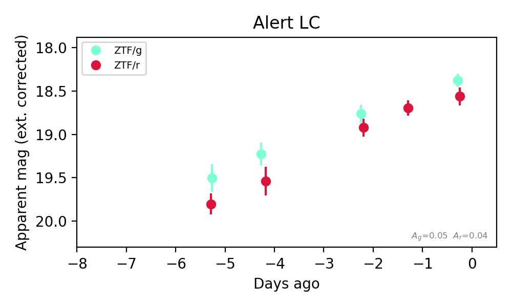
Extinction-corrected gr color:
From alerts: -0.18 +/- 0.13 mag
Rise Rate:
g: 0.22 mag/day
r: 0.26 mag/day
Fade Rate:
2. [ZTF] ZTF26abthpmr (FBOT?) [Back to Top] [Share] [Trigger Swift] [Fritz Alert] [Fritz Source] [Lasair]RA, Dec: 346.10758, 35.40859 23h 4m25.82s, 35d24m30.93sGalactic (l, b): 99.5254, -22.55293 ext(g-r) = 0.082


TESS: Sectors [16 56 83]
PS1: 1 source in 3 arcsec Closest: d = 1.64 arcsec photoz=0.53+/-0.09 peak abs mag = -23.65
LegacySurvey: 0 sources in 3 arcsec

Extinction-corrected gr color:
From alerts: -0.29 +/- 0.13 mag
Rise Rate:
g: 0.88 mag/day
r: 0.57 mag/day
Fade Rate:
3. [ZTF] ZTF26abtqfyy (FBOT?) [Back to Top] [Share] [Trigger Swift] [Fritz Alert] [Fritz Source] [Lasair]RA, Dec: 342.96099, 16.02355 22h51m50.64s, 16d 1m24.77sGalactic (l, b): 85.48641, -38.00262 ext(g-r) = 0.075


TESS: Sectors [56 83]
SDSS (<15 kpc):Found SDSS phot-z: z=0.20; peak abs mag = -20.22
PS1: 1 source in 3 arcsec Closest: d = 0.20 arcsec photoz=0.55+/-0.08 peak abs mag = -22.80
LegacySurvey: 0 sources in 3 arcsec

Extinction-corrected gr color:
From alerts: -0.19 +/- 0.25 mag
Consistent with synchrotron, g-r>0!
Rise Rate:
g: 0.22 mag/day
r: 0.15 mag/day
Fade Rate:
4. [ZTF] ZTF26abuktjp (Afterglow?) [Back to Top] [Share] [Trigger Swift] [Fritz Alert] [Fritz Source] [Lasair]RA, Dec: 312.71178, 64.34754 20h50m50.83s, 64d20m51.14sGalactic (l, b): 100.29854, 12.66547 ext(g-r) = 0.55


TESS: Sectors [ 15 17 18 24 56 57 58 76 77 78 83 84 85 121]
PS1: 1 source in 3 arcsec Closest: d = 3.55 arcsec photoz=0.04+/-0.03 peak abs mag = -19.15
LegacySurvey: 0 sources in 3 arcsec

Extinction-corrected gr color:
From alerts: -0.26 +/- 0.27 mag
Consistent with synchrotron, g-r>0!
Rise Rate:
g: 1.97 mag/day
r: 0.1 mag/day
Fade Rate:
g: 1.83 mag/day
5. [ZTF] ZTF26abunuzm (FBOT?) [Back to Top] [Share] [Trigger Swift] [Fritz Alert] [Fritz Source] [Lasair]RA, Dec: 2.09544, -19.07068 0h 8m22.91s, -19d-4m-14.43sGalactic (l, b): 69.84326, -77.24617 ext(g-r) = 0.025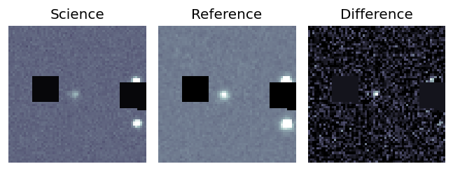
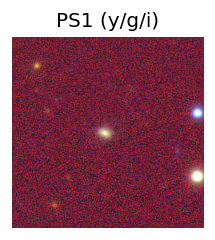
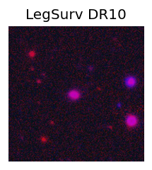
TESS: Sectors [ 2 29 69 107]
SDSS (<15 kpc):Found SDSS phot-z: z=0.13; peak abs mag = -19.00
PS1: 1 source in 3 arcsec Closest: d = 1.10 arcsec photoz=0.17+/-0.03 peak abs mag = -19.73
LegacySurvey: 0 sources in 3 arcsec
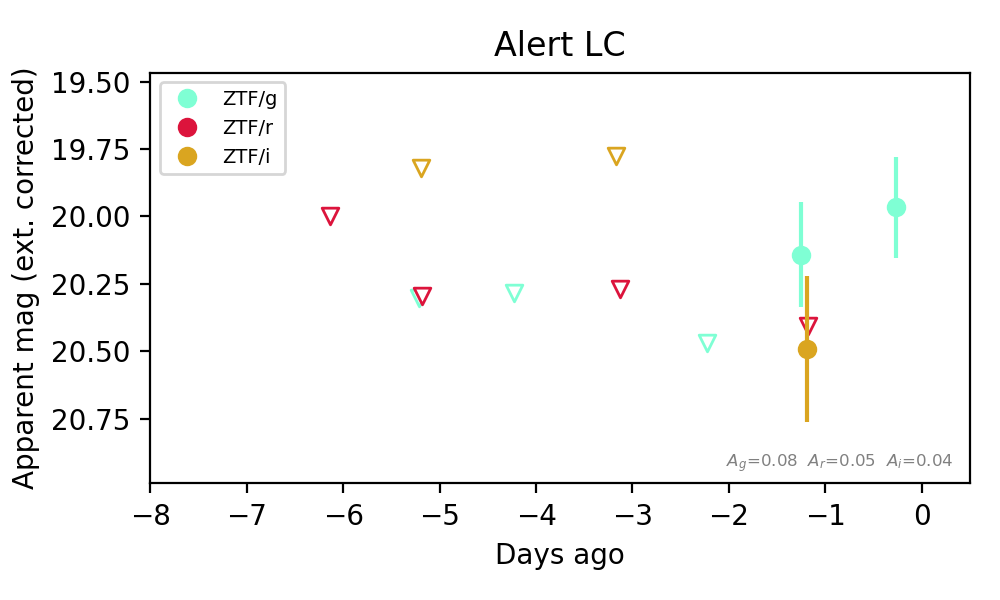
Extinction-corrected gr color:
From alerts: -0.26 +/- 99 mag
Extinction-corrected gi color:
From alerts: -0.35 +/- 0.33 mag
Extinction-corrected ri color:
From alerts: -0.08 +/- 99 mag
Rise Rate:
g: 0.26 mag/day
Fade Rate:
6. [ZTF] ZTF26abuuzad (Afterglow?) [Back to Top] [Share] [Trigger Swift] [Fritz Alert] [Fritz Source] [Lasair]RA, Dec: 297.69128, -2.87243 19h50m45.91s, -2d-52m-20.76sGalactic (l, b): 37.19557, -14.50032 ext(g-r) = 0.33


TESS: Sectors 81
PS1: 0 sources in 3 arcsec
LegacySurvey: 0 sources in 3 arcsec

Extinction-corrected gr color:
From alerts: -1.03 +/- 99 mag
Extinction-corrected gi color:
From alerts: 0.0 +/- 0.49 mag
Extinction-corrected ri color:
From alerts: 0.94 +/- 99 mag
Consistent with synchrotron, g-r>0!
Rise Rate:
i: 0.83 mag/day
Fade Rate:
7. [ZTF] ZTF26abuvcov (Afterglow?) [Back to Top] [Share] [Trigger Swift] [Fritz Alert] [Fritz Source] [Lasair]RA, Dec: 273.86378, -11.44846 18h15m27.31s, -11d-26m-54.46sGalactic (l, b): 18.6443, 2.62985 ext(g-r) = 1.572


TESS: Sectors [ 80 91 118]
PS1: 1 source in 3 arcsec Closest: d = 1.10 arcsec photoz=0.65+/-0.16 peak abs mag = -29.56
LegacySurvey: 0 sources in 3 arcsec

Extinction-corrected gr color:
From alerts: -0.63 +/- 99 mag
Rise Rate:
g: 2.17 mag/day
r: 0.94 mag/day
Fade Rate:
g: 1.94 mag/day
8. [ZTF] ZTF26abuwnoq (FBOT?) [Back to Top] [Share] [Trigger Swift] [Fritz Alert] [Fritz Source] [Lasair]RA, Dec: 346.15476, 60.58014 23h 4m37.14s, 60d34m48.51sGalactic (l, b): 110.17889, 0.38075 ext(g-r) = 2.281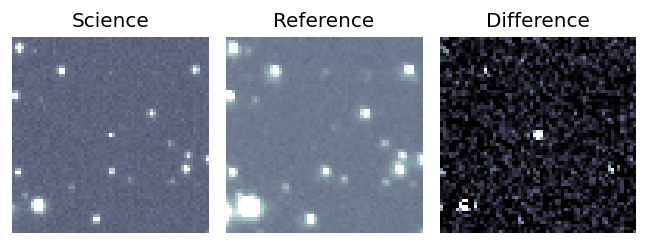
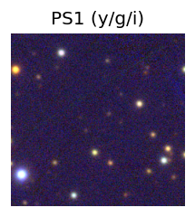

TESS: Sectors [24 57 58 77 78 84 85]
PS1: 1 source in 3 arcsec Closest: d = 3.90 arcsec photoz=0.08+/-0.60 peak abs mag = -23.14
LegacySurvey: 0 sources in 3 arcsec
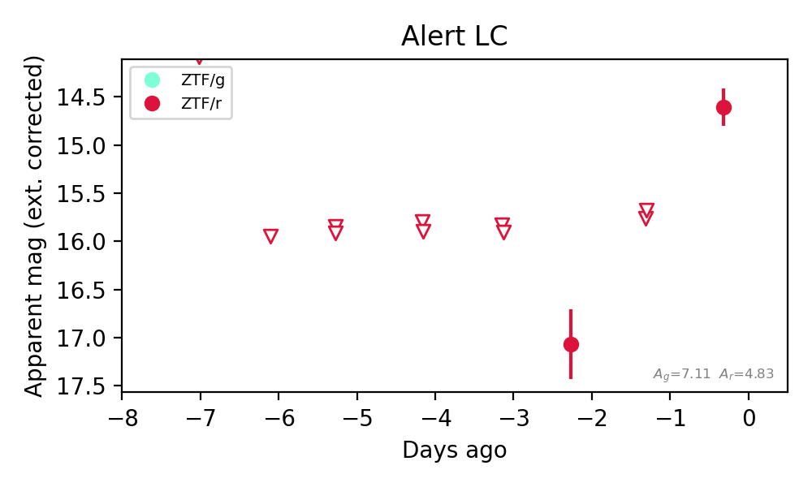
Extinction-corrected gr color:
From alerts: -3.33 +/- 99 mag
Rise Rate:
r: 1.27 mag/day
Fade Rate:
9. [ZTF] ZTF26abuwuyx (Afterglow?) [Back to Top] [Share] [Trigger Swift] [Fritz Alert] [Fritz Source] [Lasair]RA, Dec: 330.27206, -11.43929 22h 1m5.29s, -11d-26m-21.45sGalactic (l, b): 45.88337, -47.11059 WARNING: 0.65 deg from ecliptic plane ext(g-r) = 0.056


TESS: Sectors 116
PS1: 1 source in 3 arcsec Closest: d = -999.00 arcsec photoz=1.18+/-1.45 peak abs mag = -25.07
LegacySurvey: 0 sources in 3 arcsec

Extinction-corrected gr color:
From alerts: 0.82 +/- 99 mag
Extinction-corrected ri color:
From alerts: -0.38 +/- 99 mag
Rise Rate:
r: 0.66 mag/day
Fade Rate:
r: 0.96 mag/day
10. [ZTF] ZTF26abuxiky (Afterglow?) [Back to Top] [Share] [Trigger Swift] [Fritz Alert] [Fritz Source] [Lasair]RA, Dec: 343.78928, -3.88125 22h55m9.43s, -3d-52m-52.51sGalactic (l, b): 67.76885, -53.79928 WARNING: 2.79 deg from ecliptic plane ext(g-r) = 0.058


TESS: Sectors [42 70 92]
SDSS (<15 kpc):Found SDSS phot-z: z=0.19; peak abs mag = -19.79
PS1: 1 source in 3 arcsec Closest: d = 0.47 arcsec photoz=0.18+/-0.03 peak abs mag = -19.68
LegacySurvey: 0 sources in 3 arcsec

Extinction-corrected gr color:
From alerts: -0.14 +/- 0.27 mag
Extinction-corrected gi color:
From alerts: 0.34 +/- 99 mag
Extinction-corrected ri color:
From alerts: 0.48 +/- 99 mag
Consistent with synchrotron, g-r>0!
Rise Rate:
r: 0.01 mag/day
Fade Rate:
r: 0.23 mag/day